4 Traitement et analyse statistique des données de forage
Ce chapitre porte sur la préparation des données de forage avant l’estimation des ressources. Une fois les teneurs produites et validées, elles doivent être replacées dans l’espace et rendues statistiquement comparables. Les mesures de déviation — azimut, pendage et profondeur — sont d’abord converties en coordonnées cartésiennes pour chaque trou. Les teneurs sont ensuite régularisées sur un support constant par la formation de composites. Enfin, l’effet d’un échantillonnage spatialement non uniforme est corrigé à l’aide de méthodes de débiaisement et de dégroupement. À chaque étape, l’accent est mis sur l’effet quantitatif de ces choix sur les statistiques et sur l’estimation des ressources. Des ateliers interactifs permettent d’en mesurer directement les répercussions.
À la fin de ce chapitre, l’étudiant devrait être en mesure de :
Décrire la géométrie d’un forage et convertir les mesures de déviation en coordonnées cartésiennes;
Réaliser une analyse exploratoire des teneurs (statistiques descriptives, histogrammes, corrélations) et traiter les valeurs extrêmes par écrêtage;
Comprendre le rôle des composites et régulariser les teneurs sur un support constant;
Reconnaître l’effet d’un échantillonnage spatial non uniforme et appliquer des méthodes de débiaisement ou de dégroupement.
Ce chapitre s’appuie principalement sur le livre suivant :
Pyrcz, M. J., & Deutsch, C. V. (2014). Geostatistical reservoir modeling. Oxford University Press.
4.1 Préparation des données de forage pour l’estimation
Une valeur analytique \(z_i\) ne peut servir telle quelle à l’estimation. Une teneur n’a de sens que rattachée à sa position \(\mathbf{x}_i\), à son support (le volume de matière qu’elle représente, réduit à la longueur \(\ell_i\) d’un intervalle pour une carotte de section constante) et au domaine géologique dont elle provient. Deux échantillons de même teneur ne portent donc pas la même information s’ils diffèrent par leur support ou leur contexte.
Or, cette position n’est pas donnée d’emblée : un forage ne suit jamais exactement la droite prévue; il dévie sous l’effet des propriétés physiques des roches. On ne connaît la position réelle d’un échantillon qu’après avoir converti les mesures de déviation — azimut et pendage relevés à intervalles réguliers — en coordonnées le long du trou (le levé). Une trajectoire mal reconstituée déplace l’échantillon, fausse les distances entre données et, par suite, toute l’estimation. Rattacher chaque teneur \(z_i\) à sa vraie position \(\mathbf{x}_i\) est donc le premier préalable.
Une fois les données correctement positionnées, on les examine avant tout traitement : c’est l’analyse exploratoire. Elle décrit la distribution des teneurs — forme, centre, dispersion, valeurs extrêmes — et met en évidence les deux propriétés qui empêchent d’appliquer directement les statistiques classiques aux données brutes.
D’abord, les supports sont inégaux : les intervalles analysés n’ont pas tous la même longueur, si bien qu’une moyenne arithmétique des teneurs brutes accorde le même poids à un échantillon de 0,5 m et à un autre de 3 m. Il faut donc ramener les teneurs à un support constant — c’est la régularisation par composites.
Ensuite, l’échantillonnage est spatialement préférentiel : les forages sont plus serrés là où la minéralisation est riche, précisément parce que c’est là qu’on cherche à la définir. Une statistique calculée sur les données brutes surpondère alors ces zones, et la moyenne obtenue surestime la teneur du gisement. Ce biais tient à la répartition des données, non à l’analyse; on le corrige par le débiaisement et le dégroupement.
L’objectif de ce chapitre est de transformer les informations brutes — collets, mesures de déviation, intervalles, densités et teneurs — en un jeu de données cohérent et statistiquement exploitable. On procède en quatre étapes : convertir les mesures de déviation en coordonnées (levé), ramener les teneurs à un support commun (régularisation par composites), décrire la distribution des teneurs et traiter ses valeurs extrêmes (analyse exploratoire), puis corriger l’effet du suréchantillonnage (débiaisement et dégroupement).
4.2 Déviation des forages et levé
Lors de l’estimation des ressources et des réserves minérales, il est nécessaire de connaître la localisation exacte \((x, y, z)\) des teneurs afin d’interpoler les données à des coordonnées non observées. Cependant, il n’est pas rare que les forages dévient, modifiant les coordonnées initialement prévues. Il faut alors assurer le suivi des déviations et en mesurer l’orientation et la direction (i.e., azimut et plongée) afin de corriger les coordonnées.
Mise en contexte
La déviation d’un trou de forage dépend de la nature des roches traversées, de la technique de forage utilisée, ainsi que de sa profondeur et de son inclinaison initiale. Si le trou est foré parallèlement à la schistosité ou à la structure naturelle de la roche, il tendra à suivre les plans de faiblesse (p. ex., d’une roche dure à une roche molle). En revanche, s’il est foré à un angle plus élevé, il tendra à se dévier perpendiculairement à ces plans de faiblesse (p. ex., d’une roche molle à une roche dure). Ces deux cas typiques sont illustrés à la Figure 4.1.
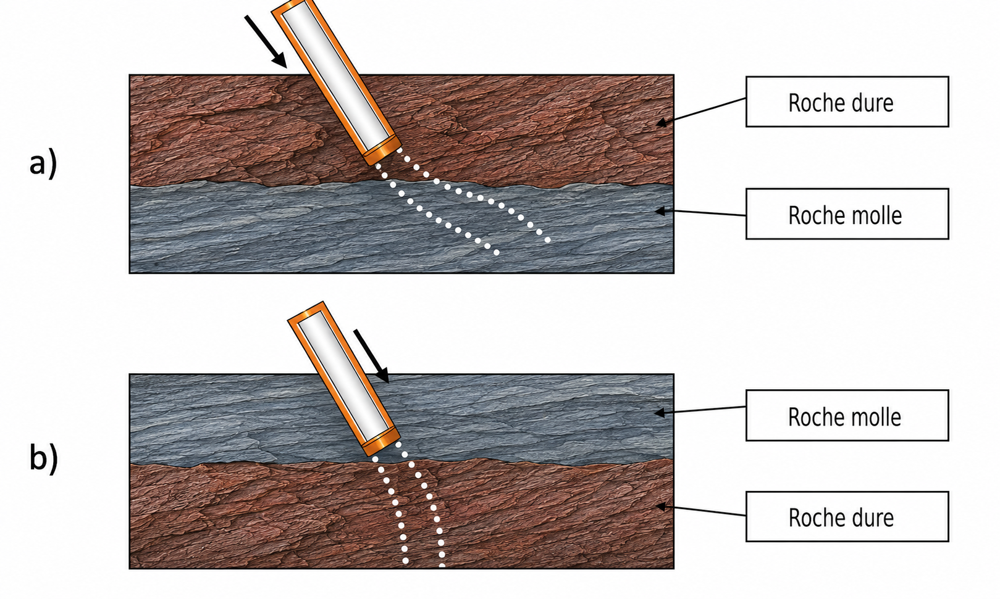
Un exemple célèbre illustrant l’importance de la mesure des déviations est celui de la mine de Louvicourt. Les forages ont dévié de manière significative et l’arpentage a été mal réalisé. En conséquence, une forte surestimation des réserves minérales a été constatée. La minière pensait disposer d’une veine minéralisée de plus de 40 Mt, soit une durée de vie de la mine de 25 ans. Les réserves réelles se sont avérées d’environ 15 Mt (une diminution de 25 Mt), avec une durée de vie réduite à 10 ans.
La Figure 4.2 illustre cette problématique. Les ingénieurs croyaient avoir affaire à une veine dont la longueur correspondait à la ligne rose, avec des forages supposés non déviés (lignes bleues). Cependant, les forages ont en réalité montré des déviations importantes (lignes noires), et la longueur réelle de la minéralisation est beaucoup plus courte (ligne rouge). On observe clairement une surestimation de la longueur de la veine minéralisée par rapport à la vérité.
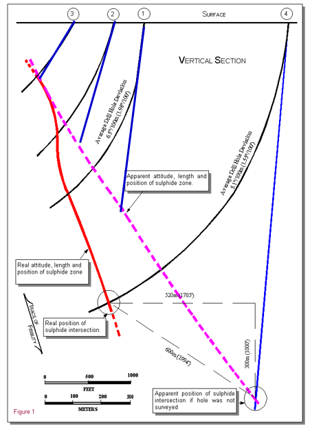
Suivi des déviations
Pour estimer correctement les tonnages et les teneurs, il faut connaître avec précision la position des échantillons dans l’espace. Chaque teneur, associée à une profondeur le long du forage, doit être convertie en coordonnées cartésiennes \((x, y, z)\) pour entrer dans un modèle géostatistique.
Pour y parvenir, il faut d’abord connaître la position du collet du forage. Cette position doit être levée avec précision et intégrée au système de coordonnées approprié. Ensuite, il faut reconstruire la trajectoire du trou à partir des mesures de déviation. Un forage est rarement parfaitement droit : il dévie sous l’effet du dispositif de forage et des roches rencontrées.
Le levé des collets de forage est généralement réalisé à l’aide d’une station totale ou d’un GPS de haute précision. Les coordonnées obtenues doivent être intégrées dans un système de référence unique, afin d’éviter les erreurs de positionnement entre les forages, la topographie et le modèle géologique. Les altitudes des collets doivent aussi être comparées à la topographie locale; un écart de plus d’une demi-hauteur de gradin, soit environ 2 m, est généralement considéré comme problématique et peut indiquer une erreur de levé ou de saisie.
Les déviations sont mesurées à différentes profondeurs de forage. Selon le contexte, on peut utiliser des instruments magnétiques, des gyroscopes ou des mesures de type single-shot ou multi-shot. Ces mesures fournissent l’azimut et l’inclinaison du trou. On peut ensuite reconstruire la trajectoire du forage en 3D et replacer correctement les intervalles échantillonnés.
Il faut faire attention, car un forage peut dévier bien plus qu’on ne le pense. C’est souvent le cas pour les forages inclinés, profonds ou réalisés dans des roches aux propriétés très variables. La trajectoire peut être influencée par les contrastes de dureté, les plans de faiblesse ou certaines structures géologiques. Les instruments magnétiques peuvent également être perturbés par des minéraux tels que la magnétite ou la pyrrhotite. Dans certains cas, il faut aussi corriger les azimuts en tenant compte de la déclinaison magnétique.
Si les déviations ne sont pas correctement suivies, un intervalle minéralisé peut être placé au mauvais endroit dans le modèle. L’erreur peut atteindre plusieurs mètres. Ce déplacement fausse l’interprétation géologique et l’estimation des ressources.
Méthode de calcul des déviations
Pour utiliser les données de forage dans un modèle 3D, il faut convertir les profondeurs mesurées le long du trou en coordonnées \((x, y, z)\). Cette étape s’appelle le désondage, ou desurveying.
Au départ, les analyses sont seulement placées selon leur profondeur dans le forage. Par exemple, les analyses chimiques peuvent n’être réalisées que sur un intervalle compris entre 120 m et 150 m le long du trou. Cette information indique où il se situe dans le forage, mais pas exactement où il se trouve dans l’espace. Si le forage est incliné ou s’il dévie avec la profondeur, l’intervalle ne sera pas directement sous le collet. Il faut donc reconstruire la trajectoire du trou pour placer correctement les échantillons dans le modèle.
Le désondage utilise donc les mesures de déviation prises le long du forage. Ces mesures indiquent l’azimut et l’inclinaison du trou à différentes profondeurs.
Définition 4.1 (Azimut) Angle horizontal donnant la direction du forage, mesuré dans le plan horizontal à partir du nord, dans le sens horaire, et exprimé en degrés (0° à 360°). Un azimut de 0° pointe vers le nord, 90° vers l’est, 180° vers le sud et 270° vers l’ouest.
Définition 4.2 (Inclinaison (plongée)) Angle vertical entre la trajectoire du forage et le plan horizontal, exprimé en degrés. Un trou horizontal a une inclinaison de 0° et un trou vertical dirigé vers le bas une inclinaison de 90° (comptée négativement, −90°, dans plusieurs logiciels : la convention de signe doit toujours être vérifiée).
À partir de ces informations, il devient possible de reconstruire la trajectoire du forage et de calculer la position du centre de chaque composite.
Prenons un exemple concret. Le tableau ci-dessous donne les mesures de déviation d’un forage, relevées au collet puis à 40 m, 100 m et 120 m de profondeur : à chaque station, on enregistre l’azimut et l’inclinaison du trou.
Définition 4.3 (Collet et arpentage) Le collet est le point où le forage débute en surface. Ses coordonnées \((x_0, y_0, z_0)\) — est, nord et élévation — sont déterminées par arpentage et constituent le point de départ à partir duquel toute la trajectoire du forage est reconstruite.
| Point de mesure | Azimut | Inclinaison |
|---|---|---|
| Collet | \(103^\circ\) | \(53^\circ\) |
| 40 m | \(107^\circ\) | \(58^\circ\) |
| 100 m | \(120^\circ\) | \(65^\circ\) |
| 120 m | \(135^\circ\) | \(72^\circ\) |
L’orientation du trou n’est donc connue qu’à ces quatre stations. Le désondage part du collet, dont les coordonnées \((x_0, y_0, z_0)\) sont connues par arpentage, puis cumule les déplacements le long du trou à partir des mesures de déviation. Pour placer un échantillon situé entre deux stations, il faut interpoler la trajectoire; on obtient alors les coordonnées \((x, y, z)\) du centre d’un composite, par exemple un intervalle situé autour de 110 m de profondeur.
Plusieurs méthodes permettent d’effectuer ce calcul. Les plus utilisées dans les logiciels miniers sont la méthode de la courbure minimale et la méthode d’équilibre tangentielle. La différence tient à la façon d’interpoler la trajectoire entre deux stations : la méthode d’équilibre tangentielle relie les stations par des segments rectilignes, tandis que la courbure minimale les relie par un arc de cercle, ce qui suit mieux une trajectoire courbe. La courbure minimale est généralement considérée comme la plus précise des deux dans la littérature. Cependant, nous utiliserons la méthode d’équilibre tangentielle, car elle est simple à appliquer et permet de bien comprendre le principe du désondage. À noter que lorsque les mesures de déviation sont suffisamment rapprochées, les différentes méthodes de désondage deviennent pratiquement équivalentes.
Méthode d’équilibre tangentielle (Balanced Tangential Method)
La méthode d’équilibre tangentielle est utilisée pour calculer les coordonnées 3D d’un forage à partir des mesures de déviation. Elle suppose que la moitié de la distance mesurée (Measured Depth, ou \(MD/2\)) suit l’orientation du point supérieur (azimut, inclinaison), et que l’autre moitié suit l’orientation du point inférieur. Cela implique que l’on doit identifier le point médian entre deux points de mesure. Prenons l’exemple précédent. La première section, allant de 0 m à 40 m, comprendra deux déviations de 20 m chacune : l’une avec l’inclinaison et l’azimut du collet, l’autre avec l’azimut et l’inclinaison mesurés à 40 m.
Les formules utilisées pour calculer les coordonnées \(x\), \(y\) et \(z\) sont les suivantes :
\[\begin{aligned} \Delta x &= \frac{MD}{2} \cdot \cos(I_1) \cdot \sin(Az_1) + \frac{MD}{2} \cdot \cos(I_2) \cdot \sin(Az_2) \\ \Delta y &= \frac{MD}{2} \cdot \cos(I_1) \cdot \cos(Az_1) + \frac{MD}{2} \cdot \cos(I_2) \cdot \cos(Az_2) \\ \Delta z &= \frac{MD}{2} \cdot \sin(I_1) + \frac{MD}{2} \cdot \sin(I_2)\end{aligned}\]
Dans ces équations, \(MD\) représente la distance mesurée entre deux points de déviation. \(I_1\) et \(Az_1\) correspondent à l’inclinaison et l’azimut du point supérieur, tandis que \(I_2\) et \(Az_2\) désignent les paramètres du point inférieur.
Ces incréments \((\Delta x, \Delta y, \Delta z)\) se cumulent à partir du point précédent. Connaissant les coordonnées du collet \((x_0, y_0, z_0)\), la position de la première station, à 40 m, s’obtient par simple addition :
\[ x_1 = x_0 + \Delta x, \qquad y_1 = y_0 + \Delta y, \qquad z_1 = z_0 - \Delta z \]
où \(\Delta z\) est la composante verticale descendante (on la soustrait si \(z\) désigne l’élévation). On répète ensuite l’opération de section en section : la section 40–100 m donne \((x_2, y_2, z_2) = (x_1, y_1, z_1) + (\Delta x, \Delta y, \Delta z)\), puis 100–120 m, et ainsi de suite jusqu’à reconstruire toute la trajectoire du trou. Chaque échantillon est alors positionné en cumulant les déplacements depuis le collet.
Exemple numérique
Considérons les mesures aux profondeurs de 0 m (\(I_1 = 53^\circ\), \(Az_1 = 103^\circ\)) et de 40 m (\(I_2 = 58^\circ\), \(Az_2 = 107^\circ\)). La distance mesurée est de \(MD = 40\) m.
Calculs :
\[\begin{aligned} \Delta x &= \frac{40}{2} \cdot \cos(53^\circ) \cdot \sin(103^\circ) + \frac{40}{2} \cdot \cos(58^\circ) \cdot \sin(107^\circ) \\ &\approx \frac{40}{2} \cdot 0{,}6018 \cdot 0{,}9744 + \frac{40}{2} \cdot 0{,}5299 \cdot 0{,}9563 \\ &\approx 11{,}73 + 10{,}13 = 21{,}86\,\text{m} \\ \Delta y &= \frac{40}{2} \cdot \cos(53^\circ) \cdot \cos(103^\circ) + \frac{40}{2} \cdot \cos(58^\circ) \cdot \cos(107^\circ) \\ &\approx \frac{40}{2} \cdot 0{,}6018 \cdot (-0{,}2250) + \frac{40}{2} \cdot 0{,}5299 \cdot (-0{,}2924) \\ &\approx -2{,}71 - 3{,}10 = -5{,}81\,\text{m} \\ \Delta z &= \frac{40}{2} \cdot \sin(53^\circ) + \frac{40}{2} \cdot \sin(58^\circ) \\ &\approx \frac{40}{2} \cdot 0{,}7986 + \frac{40}{2} \cdot 0{,}8480 = 32{,}93\,\text{m}\end{aligned}\]
Le déplacement du forage entre les profondeurs 0 m et 40 m est d’environ : \(\Delta x = 21{,}86\) m, \(\Delta y = -5{,}81\) m et \(\Delta z = 32{,}93\) m. En répétant ce processus jusqu’à 120 m à partir de mesures successives, le profil 3D du sondage sera construit et les coordonnées des points de mesure seront déterminées.
L’atelier interactif ci-dessous est un calculateur basé sur la méthode d’équilibre tangentielle qui vous permet d’introduire manuellement le nombre de points de mesure (Longueur, Azimut, Inclinaison) et d’obtenir la localisation de n’importe quel composite le long du forage \((x, y, z)\).
🧮 Atelier interactif 4.1 — Déviation des forages (méthode tangentielle équilibrée)
Entrez les mesures de déviation (profondeur, azimut, inclinaison) et visualisez la trajectoire 3D du forage. Calculez les coordonnées de n’importe quel composite le long du forage.4.3 Régularisation des teneurs
Une étape importante avant de calculer les ressources et les réserves minérales consiste à régulariser les teneurs mesurées sur des supports de longueur et volume variables. Il s’agit d’une pratique courante en estimation des ressources, considérée comme essentielle pour produire des estimations non biaisées.
Définition 4.4 (Support) Volume — avec sa forme et son orientation — sur lequel une teneur est mesurée ou définie. Deux teneurs ne sont directement comparables que si elles partagent le même support.
En général, les carottes de forage (ou les supports) sont collectées sur des longueurs différentes (ou à des intervalles irréguliers) en raison des variations des propriétés mécaniques des lithologies traversées, des stratégies d’échantillonnage et de la sélection des supports envoyés en analyse. En d’autres mots, nous n’analysons que rarement l’intégralité des carottes d’un forage et celles-ci n’ont pas toutes la même longueur.
Une sélection est souvent effectuée afin d’envoyer uniquement les carottes jugées pertinentes pour l’analyse, introduisant ainsi un biais de sélection potentiel. La longueur des échantillons dépend aussi de plusieurs facteurs géomécaniques (qualité du massif rocheux) et opérationnels (p. ex., l’expérience du foreur).
En géostatistique, il est primordial que les échantillons aient des supports identiques (voir l’effet de support du chapitre 6), c’est-à-dire que leur représentativité soit équivalente. Autrement dit, toutes les teneurs mesurées doivent correspondre à la même taille de support (par exemple, des carottes de 3 m, avec une densité et un volume identiques). Si les supports diffèrent, il faut procéder à une régularisation afin d’obtenir des composites de même longueur. Ainsi, un composite est un échantillon artificiel obtenu par l’agrégation de plusieurs échantillons (ici, des carottes de forage), souvent de longueurs variables, afin de former des segments de longueur uniforme.
Le composite est généralement calculé comme une moyenne pondérée par la longueur des échantillons et peut également tenir compte de la densité spécifique, des variations de volume ou du taux de récupération du carottage. La régularisation peut répondre à divers objectifs : obtenir une valeur représentative à l’intersection d’un corps minéralisé, créer des composites lithologiques ou métallurgiques, produire des composites réguliers le long des trous, par gradin (bench en anglais), par section, par haute teneur, ou encore des composites minimaux en longueur et en teneur. Chacun de ces types de composites répond à des besoins spécifiques selon les contextes d’étude. Les composites de longueur régulière ou en gradins sont les plus fréquemment utilisés pour l’estimation des ressources.
Exemple simplifié : composites réguliers
Considérons un trou de forage traversant un corps minéralisé, dans lequel trois échantillons de longueurs différentes ont été prélevés. L’échantillon 1 présente une longueur de 1 m et une teneur de 1{,}00 %, l’échantillon 2 une longueur de 3 m et une teneur de 5{,}85 %, et l’échantillon 3 une longueur de 2 m et une teneur de 1{,}75 %.
Sans régularisation, si l’on calcule simplement la moyenne des teneurs (sans pondération par la longueur), on obtient :
\[\text{Moyenne non pondérée} = \frac{1{,}0 + 5{,}85 + 1{,}75}{3} = \frac{8{,}6}{3} = 2{,}87 \%\]
Cependant, cette valeur ne reflète pas le fait que les longueurs des échantillons sont inégales. Supposons maintenant que l’on veuille créer des composites de 3 mètres. Le premier composite sera constitué de l’échantillon 1 (1 m) et d’une partie de l’échantillon 2 (2 m). La teneur du composite 1 sera obtenue par une moyenne pondérée par la longueur :
\[z_1 = \frac{1 \times 1{,}00 + 2 \times 5{,}85}{1 + 2} = \frac{12{,}7}{3} \approx 4{,}23 \%\]
De même, le second composite sera constitué d’une partie de l’échantillon 2 (1 m) et de l’intégralité de l’échantillon 3 (2 m). La teneur du composite 2 sera aussi obtenue par une moyenne pondérée par la longueur :
\[z_2 = \frac{1 \times 5{,}85 + 2 \times 1{,}75}{1 + 2} = \frac{9{,}35}{3} \approx 3{,}12 \%\]
Maintenant que les supports sont tous les mêmes, on peut procéder au calcul de la moyenne sans risque d’introduire un biais :
\[\text{Moyenne régularisée} = \frac{z_1 + z_2}{2} = \frac{4{,}23 + 3{,}12}{2} = 3{,}68 \%\]
On constate ici que la moyenne régularisée diffère de la moyenne non pondérée. Cette différence illustre l’impact de la régularisation : en tenant compte des longueurs réelles des échantillons, on obtient une estimation plus représentative de la teneur du gisement. La Figure 4.3 illustre le calcul effectué ci-haut.
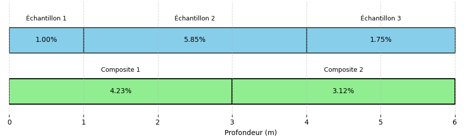
Exemple simplifié : densité
La densité des carottes, au même titre que leur longueur, intervient dans la régularisation des teneurs. Supposons qu’un bloc de minerai de 1 m³ contient 3 % de cuivre. Nous voulons calculer la quantité de cuivre en fonction de la densité du minerai.
Si la densité du minerai est de 3{,}5 tonnes par mètre cube (t/m³), la masse totale du minerai dans 1 m³ est de 3{,}5 tonnes. La quantité de cuivre sera alors :
\[\text{Quantité de cuivre} = 3\% \times 3{,}5 \, \text{t} = 0{,}03 \times 3{,}5 \, \text{t} = 0{,}105 \, \text{t} = 105 \, \text{kg}\]
Si la densité du minerai est de 3{,}2 t/m³, la masse totale du minerai dans 1 m³ est de 3{,}2 tonnes. La quantité de cuivre sera alors :
\[\text{Quantité de cuivre} = 3\% \times 3{,}2 \, \text{t} = 0{,}03 \times 3{,}2 \, \text{t} = 0{,}096 \, \text{t} = 96 \, \text{kg}\]
Ainsi, pour 1 m³ de minerai à la densité de 3{,}5 t/m³, la quantité de cuivre est de 105 kg, mais elle chute à 96 kg lorsque la densité est de 3{,}2 t/m³. Bien que la teneur en cuivre soit constante à 3%, la quantité de cuivre dans 1 m³ de minerai varie en fonction de la densité. Plus la densité est faible (3{,}2 t/m³ contre 3{,}5 t/m³), moins il y a de métal dans un volume donné de minerai. Il est donc très important de tenir compte de la densité lors de l’estimation des ressources et des réserves minières. À noter que souvent, les variations de densité peuvent être considérées comme négligeables.
Accumulation (teneur × épaisseur)
Dans les gisements tabulaires ou filoniens — veines d’or, reefs de platine, certaines latérites nickelifères ou gisements d’uranium de type roll-front —, la régularisation classique par composites est mal adaptée. Les intercepts minéralisés sont étroits et de longueur irrégulière, on n’en compte souvent qu’un seul par forage, et les teneurs varient fortement, les intercepts les plus minces étant parfois les plus riches. Dans ces conditions, on travaille plutôt avec l’accumulation, aussi appelée variable teneur–épaisseur (grade–thickness, ou GT).
L’accumulation est le produit de la teneur par l’épaisseur de l’intercept :
\[ GT = \text{teneur} \times \text{épaisseur} \]
Cette quantité est proportionnelle au contenu en métal de l’intercept. On l’estime indépendamment de l’épaisseur, puis la teneur finale en un point ou un bloc s’obtient en divisant l’accumulation estimée par l’épaisseur estimée. L’épaisseur doit être l’épaisseur vraie, c’est-à-dire mesurée normalement au pendage, et non la longueur apparente le long du forage.
Cette approche est particulièrement utile lorsque la teneur et l’épaisseur ne sont pas fortement corrélées. Au lieu d’estimer directement la teneur, on travaille avec le produit teneur × épaisseur. Cette variable est souvent moins variable que la teneur seule, ce qui peut rendre l’estimation plus stable. Cela évite aussi de donner trop de poids à quelques fortes teneurs locales.
Importance de la régularisation
Bien que la régularisation ne soit pas toujours indispensable pour estimer les ressources, elle s’impose dans la majorité des cas. Elle permet d’uniformiser le support des données — c’est-à-dire leur taille ou leur volume — et de corriger les intervalles d’échantillonnage partiels, ce qui facilite une estimation plus cohérente. La plupart des logiciels d’estimation considèrent d’ailleurs que les données sont issues de supports de taille constante, ce qui oblige à former des composites.
La régularisation a aussi un effet très concret : elle lisse une partie de l’information brute. Les teneurs deviennent alors plus comparables entre elles, parce qu’elles sont ramenées sur un même support. Ce support devrait rester cohérent avec la sélectivité réelle de la mine. Par exemple, en mine à ciel ouvert, la hauteur des gradins peut guider le choix de la longueur des composites. En mine souterraine, on peut plutôt se baser sur l’épaisseur des tranches ou sur l’unité exploitée.
Le choix des composites influence directement le modèle de ressources. Il faut donc faire attention à la longueur choisie, aux limites géologiques et aux intervalles incomplets ou manquants. Si les composites sont mal définis, on peut trop lisser les teneurs, mélanger des zones qui devraient rester séparées ou donner un poids trop important à certains intervalles. Les composites conditionnent donc directement l’estimation qui suit.
Régularisation par trou de forage
Nous répondrons à ces questions à l’aide d’un exemple numérique. Dans cette lecture, nous privilégierons la méthode de régularisation par trou de forage (downhole compositing). Il existe d’autres approches, notamment la régularisation par bancs ou par domaines géologiques, qui tiennent compte de critères de sélectivité liés aux opérations minières ou à la géologie du gisement.
La régularisation par bancs (bench compositing) regroupe tous les intervalles compris entre l’élévation supérieure et l’élévation inférieure d’un banc, et place le centre du composite au milieu du banc. Elle est commode en mine à ciel ouvert lorsque les forages sont presque verticaux, mais elle se dégrade dès que les forages sont inclinés : pour un forage à 45°, un banc de 10 m intègre plus de 14 m de carotte. On la limite donc en pratique aux forages dont l’inclinaison ne dépasse pas environ 70°, et on l’évite lorsque le jeu de données mêle des forages verticaux et inclinés. La régularisation par trou de forage, elle, compose toujours la même longueur le long du trou et ne dépend pas de l’inclinaison : le centre du composite correspond exactement à la position des échantillons combinés. C’est cette robustesse qui en fait la méthode privilégiée ici. Bien la maîtriser suffit généralement à comprendre les principes des autres méthodes de régularisation.
Exemple numérique de régularisation par trou de forage
L’exemple suivant illustre un cas typique de régularisation par trou (down-the-hole), avec des échantillons dont la longueur des carottes varie entre 3 et 7 m. Certains intervalles contiennent des données manquantes, soit en raison d’une perte d’information, soit en raison d’une non-analyse de l’échantillon. Nous appliquons une régularisation à longueur constante de 6 m. La longueur optimale de 6 m permet ici de réduire la variabilité sans perdre en sélectivité. La méthode utilisée est la régularisation par longueur constante en suivant la longueur du forage. Bien que le respect des limites géologiques ne soit pas pris en compte ici, on peut tronquer les composites à ces limites si nécessaire. Concernant la gestion des données manquantes, les composites contenant des zones sans données sont conservés si la portion valide couvre au moins 50 % de la longueur nominale. Ce seuil de 50 % est un usage courant dans l’industrie, mais il reste arbitraire : une étude de corrélation entre la longueur de composite et la teneur peut justifier un seuil plus bas lorsque cette corrélation est faible. En deçà du seuil retenu, le composite est ignoré.
Exemples de calcul de composites
La Figure 4.4 présente les résultats de la régularisation pour les distances de 60 m à 90 m. Il y a ainsi 5 composites à former (30/6 = 5). Nous expliquerons le calcul pour le composite 2 et 4.
Le Composite 2 couvre l’intervalle de profondeur de 66 à 72 m. Sa teneur est calculée comme la moyenne pondérée des teneurs selon la formule suivante :
\[ \text{Teneur composite 2} = \frac{\sum_i \text{Teneur}_i \times \text{Longueur}_i}{\sum_i \text{Longueur}_i} = \frac{0{,}16 \times 4{,}5 + 0{,}09 \times 1{,}5}{6} = \frac{0{,}855}{6} \approx 0{,}14\ \% \]
où les longueurs et teneurs considérées ne correspondent qu’aux portions valides. Le Composite 4 couvre l’intervalle de 78 m à 84 m. Bien qu’il croise également des carottes d’échantillonnage, la longueur totale des portions valides dans cet intervalle est inférieure à 3 m (moins de 50 % de la longueur nominale). En vertu du critère fixé, ce composite est donc ignoré et marqué comme NaN (non défini).
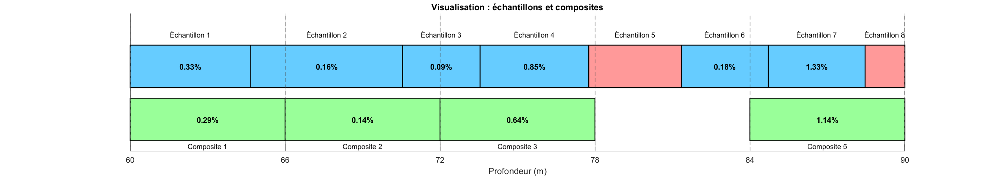
Choix de la longueur des composites
La longueur de composite choisie dans cet exemple est de 6 m. Ce choix repose d’abord sur l’analyse de la distribution des longueurs des échantillons bruts, qui montre une concentration marquée autour de cette valeur (Figure 4.5). Cela reflète une trame d’échantillonnage déjà assez régulière dans les forages. Du point de vue géostatistique, cette régularisation à 6 m permet de réduire la variabilité locale tout en maintenant une sélectivité suffisante pour distinguer les structures géologiques majeures. Une régularisation efficace vise d’ailleurs à augmenter le support d’échantillonnage, et non à le réduire.
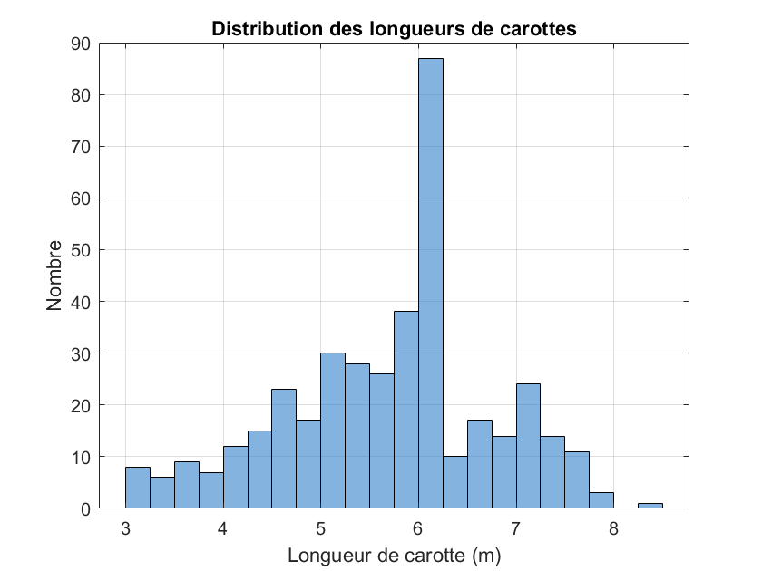
🧮 Atelier interactif 4.2 — Régularisation et composite
Ajoutez ou modifiez des échantillons de longueurs variables et observez la formation des composites de longueur fixe. Ajustez la longueur du composite et le seuil de couverture minimale.Au-delà de son effet sur la moyenne, la régularisation modifie aussi la variabilité spatiale du jeu de données : en moyennant les teneurs sur un support plus grand, les composites lissent les valeurs extrêmes et réduisent la variance par rapport aux carottes originales. C’est la part la plus erratique de la variabilité, celle qui se manifeste à très courte distance, qui est le plus atténuée lorsque les composites sont longs. Cet effet du support sur la variabilité spatiale sera étudié plus loin dans le livre, une fois les outils d’analyse de la continuité spatiale — le variogramme — formellement introduits.
Pour l’instant, il faut surtout retenir que la régularisation est nécessaire, mais qu’elle change aussi les statistiques des données. Maintenant que toutes les teneurs reposent sur un support commun, elles sont enfin comparables entre elles : on peut alors décrire rigoureusement leur distribution — forme, tendance centrale, dispersion, valeurs extrêmes. C’est l’objet de l’analyse exploratoire des données, présentée dans la section suivante.
4.4 Analyse exploratoire des données
L’analyse exploratoire décrit la distribution des teneurs, repère les anomalies et oriente les choix méthodologiques avant la modélisation spatiale et l’estimation. Elle porte sur des teneurs déjà ramenées à un support commun, donc comparables.
Statistiques descriptives univariées
La première étape de l’analyse exploratoire consiste à décrire chaque variable séparément. Dans le cas des données de forage, on cherche notamment à comprendre la distribution des teneurs : leur niveau moyen, leur variabilité, la présence de valeurs extrêmes et le degré d’asymétrie de la distribution. Les définitions formelles de ces statistiques sont rappelées dans l’annexe de probabilités et statistiques; nous nous concentrons ici sur leur interprétation pour les teneurs.
Mesures de tendance centrale
Les mesures de tendance centrale résument le niveau général des teneurs.
La moyenne arithmétique est la mesure la plus utilisée :
\[ \bar{z} = \frac{1}{n}\sum_{i=1}^{n} z_i \]
Elle représente la teneur moyenne des échantillons. Toutefois, elle est sensible aux valeurs extrêmes et au biais d’échantillonnage. Par exemple, quelques teneurs très élevées ou une zone riche suréchantillonnée peuvent fortement augmenter la moyenne.
La médiane est la valeur qui divise les données en deux groupes de même taille : 50 % des valeurs sont inférieures à la médiane et 50 % sont supérieures. Elle est plus robuste que la moyenne face aux valeurs extrêmes. Lorsque la moyenne est nettement supérieure à la médiane, cela indique généralement une distribution asymétrique à droite, ce qui est fréquent pour les teneurs minières.
Mesures de dispersion
Les mesures de dispersion décrivent la variabilité des teneurs par rapport à leur valeur centrale.
La variance (\(s^2\)) et l’écart-type (\(s\)) mesurent l’étalement des données autour de la moyenne :
\[ s^2 = \frac{1}{n-1}\sum_{i=1}^{n}(z_i - \bar{z})^2 \]
Un écart-type élevé indique que les teneurs varient fortement d’un échantillon à l’autre.
Le coefficient de variation permet de comparer la variabilité relative d’une variable :
\[ \text{CV} = \frac{s}{\bar{z}} \]
Un CV supérieur à 1 est courant pour les métaux précieux, comme l’or, et indique une forte hétérogénéité des teneurs.
Mesures de forme
Les mesures de forme décrivent l’allure générale de la distribution.
Le coefficient d’asymétrie (skewness) indique si la distribution est symétrique ou présente une queue plus longue d’un côté. Une asymétrie positive, avec une queue orientée vers les valeurs élevées, est fréquente dans les distributions de teneurs.
Le coefficient d’aplatissement (kurtosis) mesure l’ampleur des valeurs extrêmes. Un kurtosis élevé indique que la distribution contient des valeurs très éloignées du centre, ce qui peut influencer fortement la moyenne et la variance.
Quantiles et diagrammes en boîte
Les quantiles décrivent la distribution sans supposer de forme particulière. Les quartiles, déciles et percentiles permettent de résumer la proportion des données situées sous certains seuils.
Le diagramme en boîte (box plot) est une représentation visuelle utile. Il montre la médiane, les quartiles, l’étendue des données et les valeurs extrêmes potentielles. Il permet donc de repérer rapidement l’asymétrie, la dispersion et la présence de teneurs atypiques.
Histogramme et fonction de répartition
L’histogramme est la représentation graphique la plus directe de la distribution des données. Le choix du nombre de classes influence la perception : trop peu de classes masquent la structure, trop de classes introduisent du bruit. Des règles empiriques (Sturges, Freedman-Diaconis) existent pour guider ce choix.
La fonction de répartition empirique (ou CDF) représente, pour chaque valeur \(z\), la proportion des données inférieures ou égales à \(z\). Elle est indépendante du choix des classes et constitue un outil diagnostique plus robuste que l’histogramme.
Cas particulier : les distributions log-normales. Les teneurs de métaux de base et précieux suivent souvent une distribution log-normale (c’est-à-dire que le logarithme des teneurs suit une distribution normale). L’histogramme des teneurs brutes est alors fortement asymétrique, tandis que celui des logarithmes des teneurs est approximativement symétrique. Il est toujours utile de tracer les deux histogrammes.
Analyse spatiale : carte des valeurs (posting)
Le posting consiste à représenter chaque donnée à sa position spatiale, avec un symbole dont la taille ou la couleur reflète la valeur de la variable. Cette carte est l’outil le plus simple pour détecter des tendances spatiales, des zones de forte ou faible teneur, et des lacunes dans l’échantillonnage.
Il est recommandé de tracer le posting en plan (vue en projection horizontale) et, si les données sont tridimensionnelles, en coupe verticale (sections parallèles ou perpendiculaires au corps minéralisé).
Valeurs extrêmes et écrêtage
Les distributions de teneurs sont typiquement asymétriques à droite : une faible proportion d’échantillons très riches côtoie une majorité de valeurs faibles. Ces valeurs extrêmes posent un double problème. D’une part, elles pèsent lourd sur les statistiques : ajouter une seule teneur \(z_{\max}\) déplace la moyenne de \((z_{\max} - \bar z)/n\) et gonfle davantage la variance, qui dépend du carré des écarts. D’autre part, lors de l’estimation, une teneur isolée très élevée est « étalée » sur tous les blocs de son voisinage, ce qui surestime le métal local (smearing).
L’enjeu se mesure surtout en quantité de métal. Pour un seuil \(z_c\), la part du métal portée par les échantillons au-dessus de ce seuil est
\[ M(z_c) = \frac{\sum_{z_i > z_c} z_i}{\sum_i z_i}. \]
Dans une distribution fortement asymétrique, \(M(z_c)\) peut atteindre 20 à 40 % du métal pour moins de 1 % des échantillons : la décision prise sur ces quelques valeurs conditionne une part majeure de la ressource.
Identifier les valeurs extrêmes. Plusieurs outils se complètent :
- la règle des quartiles, qui signale toute valeur au-delà de \(Q_3 + 1{,}5\,\text{IQR}\) (avec \(\text{IQR} = Q_3 - Q_1\));
- le graphe de probabilité log-normale, où une rupture de pente dans la queue supérieure trahit une population de teneurs distincte — l’outil le plus employé pour fixer un seuil;
- les seuils en écart-type (\(\bar z + 2s\) ou \(\bar z + 3s\)), simples mais arbitraires;
- la vérification géologique, indispensable : une teneur extrême peut être bien réelle si elle correspond à une zone à haute teneur connue.
Il faut alors distinguer deux cas. Une valeur erronée (saisie, laboratoire, positionnement) est corrigée ou retirée. Une valeur valide mais extrême n’est pas supprimée — cela sous-estimerait la ressource — mais on limite son influence.
Écrêter (capping). L’écrêtage remplace toute teneur supérieure à un seuil \(z_c\) par ce seuil :
\[ z_i^{\text{écrêté}} = \min(z_i,\, z_c). \]
Le choix de \(z_c\) ne se fait pas au hasard. Les méthodes usuelles sont :
- la rupture sur le graphe de probabilité log-normale (seuil au décrochage de la queue);
- l’analyse du métal contenu (méthode de Parrish) : on trace \(M(z_c)\) et le nombre d’échantillons coupés en fonction de \(z_c\), et on retient un seuil où le métal écarté demeure raisonnable;
- l’analyse de sensibilité : on calcule la moyenne écrêtée — et le coefficient de variation de la moyenne — sur une plage de seuils, puis on choisit là où la statistique se stabilise.
D’autres approches limitent l’influence des fortes teneurs sans les modifier, par exemple en restreignant leur distance d’influence lors de l’estimation plutôt qu’en écrêtant la donnée elle-même.
Enfin, l’écrêtage dépend du support : un seuil pertinent sur des composites de 2 m ne le serait pas sur des échantillons bruts de longueurs variables, car le compositage atténue déjà les valeurs extrêmes. Comme les teneurs ont été régularisées à l’étape précédente, on applique ici l’écrêtage directement sur les composites — le support qui servira à l’estimation. Certains praticiens préfèrent toutefois écrêter les teneurs brutes avant le compositage : l’ordre retenu doit être documenté. Quel que soit le choix, le seuil doit être justifié — c’est un point systématiquement examiné dans les rapports NI 43-101.
La littérature et les praticiens paraissent souvent en désaccord sur l’écrêtage. Ces contradictions sont surtout apparentes : elles viennent de ce que l’écrêtage n’est pas un calcul exact, mais un arbitrage de risque sans optimum unique. On introduit volontairement un biais — baisser la moyenne — pour se protéger d’un biais jugé pire : la surestimation locale et l’étalement (smearing) d’une forte teneur sur tout un voisinage de blocs. Chacun pondère ces deux risques différemment, d’où le côté « art et tradition » de la pratique.
Le débat « avant ou après compositage » se résout de même par la notion de support. Puisque l’estimation se fait sur les composites, on écrête en général après compositage, quand les données ont un support égal. Écrêter avant reste correct, à condition de couper la bonne variable — l’accumulation (teneur × longueur), et non la teneur brute, sinon une forte valeur sur 0,2 m et la même sur 3 m seraient traitées à l’identique. Les deux ordres sont donc défendables; ce qui est fautif, c’est d’écrêter des teneurs brutes de longueurs inégales.
Enfin, l’écrêtage n’est qu’un outil parmi deux : on peut aussi restreindre l’influence des fortes teneurs pendant l’estimation (portée ou nombre de blocs limités). Qui restreint coupe moins, qui ne restreint pas coupe plus — même risque géré autrement. Le principe, lui, ne varie pas : contrôler l’influence du métal extrême au support de l’estimation, garder l’écrêtage au minimum, et documenter le choix.
Analyse multivariée
Lorsque plusieurs variables sont mesurées (par exemple : teneurs en Cu, Zn, Fe, densité), il est utile de construire des nuages de corrélation entre paires de variables et de calculer la matrice de corrélation. Ces analyses permettent de détecter des relations entre variables et de décider si un cokrigeage serait bénéfique.
Synthèse : liste de vérification
Avant de passer à la modélisation géostatistique, l’analyste doit pouvoir répondre aux questions suivantes :
- La distribution des teneurs est-elle symétrique ou asymétrique? Faut-il envisager une transformation (logarithmique, normale score)?
- Y a-t-il des valeurs aberrantes? Ont-elles été vérifiées géologiquement?
- L’échantillonnage est-il spatialement uniforme ou biaisé? Un dégroupement est-il nécessaire?
- Y a-t-il des tendances spatiales visibles (gradient de teneur, zonation)?
- Les données sont-elles suffisamment denses pour supporter l’estimation à l’échelle souhaitée?
- Les teneurs reposent-elles bien sur un support uniforme (composites), et l’écrêtage éventuel a-t-il été documenté?
🧮 Atelier interactif 4.3 — Analyse exploratoire spatiale
Cet atelier illustre l’étape de description du jeu de données, une fois les teneurs régularisées : décrire la distribution (forme, centre, dispersion), repérer les valeurs extrêmes et juger si une transformation est utile.
Trois panneaux : la carte des valeurs (champ + échantillons), l’histogramme des données brutes, et la distribution transformée (logarithme des teneurs pour des données log-normales — la transformation symétrise la distribution). Les statistiques descriptives — moyenne, médiane, variance, écart-type, coefficient de variation, asymétrie, minimum et maximum — se mettent à jour en direct. Changez la distribution (gaussienne ou log-normale), la portée et la pépite, et observez comment la forme de la distribution et ces statistiques évoluent.4.5 Débiaisement (debiasing) et dégroupement (declustering)
La dernière étape, afin d’assurer une représentativité adéquate des teneurs, consiste en le débiaisement et le dégroupement des données. Le débiaisement est l’objectif — rendre les statistiques représentatives de l’ensemble du volume d’intérêt —, et le dégroupement en est la principale technique : il pondère les données selon leur densité spatiale. Les données de forage ne sont généralement pas collectées de manière aléatoire. Par exemple, les forages sont souvent réalisés dans des zones à forte teneur, qui sont prioritaires dans le calendrier d’exploitation. Ce biais d’échantillonnage, bien que justifié d’un point de vue opérationnel, fausse les statistiques globales. Il est donc nécessaire d’ajuster les histogrammes et les statistiques descriptives afin qu’elles soient représentatives de l’ensemble du volume d’intérêt.
Mise en contexte
La Figure 7.2 présente les teneurs en cuivre d’un gisement synthétique suivant une distribution log-normale, de moyenne théorique 2 % et de variance unitaire. Les cercles surlignés indiquent la position des 140 forages. Deux zones apparaissent comme suréchantillonnées : l’une au centre de l’image, où 30 forages se concentrent dans une zone riche du gisement (cercles rouges), et l’autre dans le coin inférieur gauche, où 10 forages représentent une zone à faible teneur (cercles bleus).
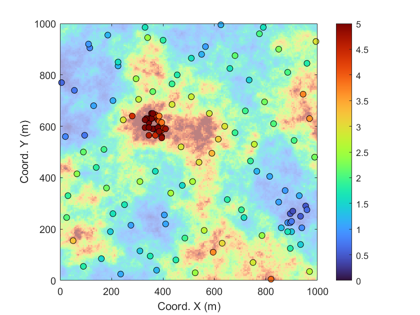
La présence de zones de suréchantillonnage biaise le calcul de nos statistiques descriptives (par exemple, la moyenne, l’écart-type et les quantiles). Il va de soi que les 30 forages représentant une zone riche vont augmenter la teneur moyenne de nos échantillons, rendant ainsi cette moyenne non représentative de la teneur moyenne réelle du gisement. Dans cette situation, il est nécessaire de procéder au débiaisement des observations par leur dégroupement.
La Figure 4.7 présente les histogrammes normalisés — c’est-à-dire ajustés pour permettre une comparaison équitable entre les distributions — des teneurs réelles du gisement (Figure 4.7 (a)), des teneurs échantillonnées sans dégroupement (Figure 4.7 (b)) et des teneurs après dégroupement (Figure 4.7 (c)). Les statistiques descriptives sont affichées sur chaque histogramme.
La comparaison de ces statistiques permet de constater que les données brutes (figure centrale) sont fortement biaisées, en raison d’une surreprésentation des zones à haute teneur, due au biais d’échantillonnage. Après dégroupement, les statistiques descriptives se rapprochent nettement de celles du gisement réel : la moyenne passe de 2,60 % à 1,90 %, alors que celle de la réalisation simulée est de 2,09 %. Le dégroupement corrige donc l’essentiel du biais, même s’il le sur-corrige légèrement ici (la moyenne théorique du modèle valant 2 %). Ce rapprochement est observable pour l’ensemble des indicateurs descriptifs. Cela illustre l’importance de corriger les biais d’échantillonnage, notamment lorsque les zones riches sont surexplorées. Dans cet exemple, l’absence de correction pourrait entraîner une surestimation significative de la richesse du gisement.
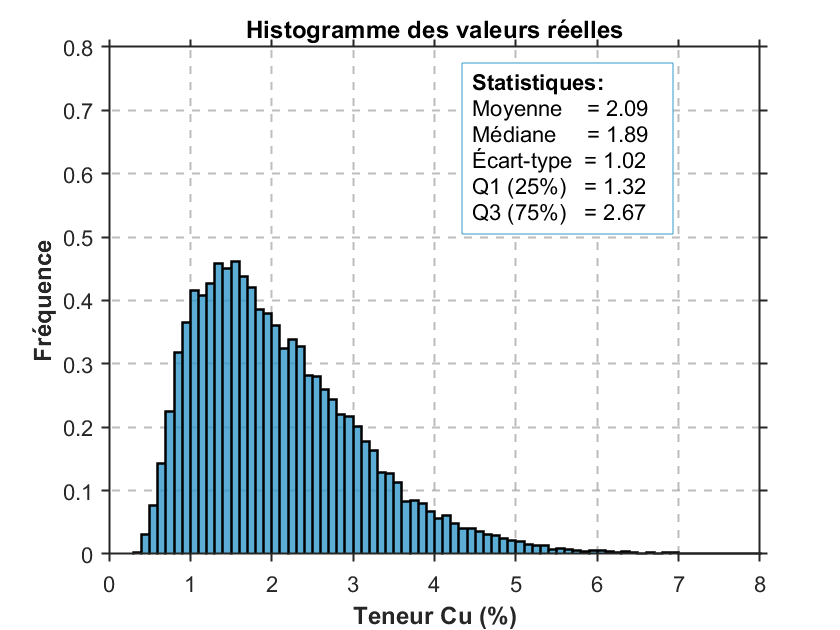
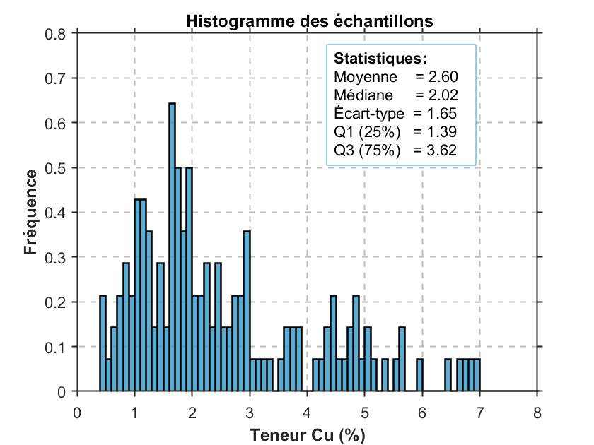
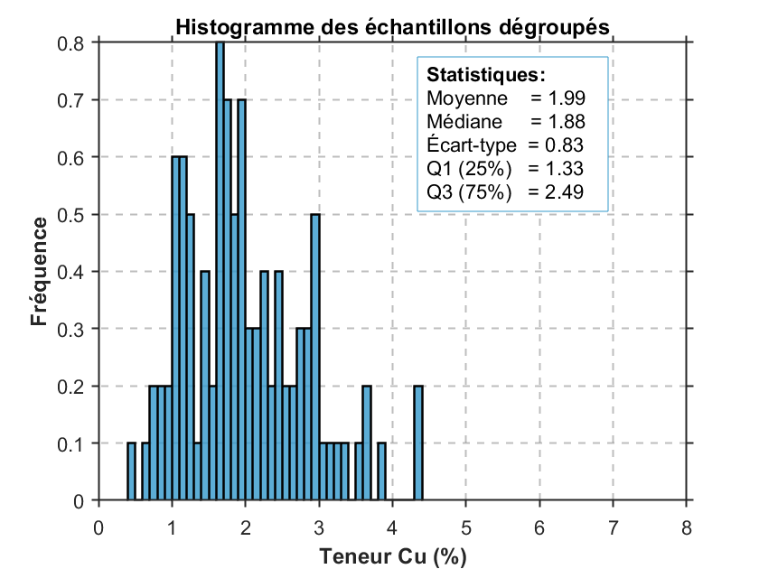
Méthode de dégroupement
Les techniques de dégroupement visent à corriger les biais d’échantillonnage en attribuant un poids à chaque donnée en fonction de sa proximité avec les autres données. Ces poids sont strictement positifs et leur somme est égale à 1. La moyenne dégroupée s’écrit alors
\[\bar z_w = \sum_{i=1}^{N} w_i\, z_i,\]
et la variance dégroupée
\[s_w^2 = \sum_{i=1}^{N} w_i\, (z_i - \bar z_w)^2,\]
chaque échantillon comptant selon son poids \(w_i\) plutôt qu’également (\(1/N\)). On recense plusieurs méthodes de dégroupement dans la littérature. Nous nous limiterons aux trois méthodes les plus couramment implémentées dans les logiciels de calcul des ressources et des réserves minières.
Dégroupement polygonal
La méthode de dégroupement polygonal est sans doute la plus simple. Elle attribue à chaque échantillon un poids proportionnel à sa surface ou à son volume d’influence. En pratique minière, cette approche fonctionne bien lorsque les limites de la zone d’intérêt sont clairement définies et que le rapport entre le plus grand et le plus petit poids est inférieur à 10 à 1.
La technique repose sur la construction de polygones d’influence autour de chaque point d’échantillonnage. Ces polygones sont définis par les médiatrices des segments reliant chaque paire de points voisins (Diagramme de Voronoï). Un exemple simple de jeu de données avec polygones d’influence est illustré à la Figure 4.8.
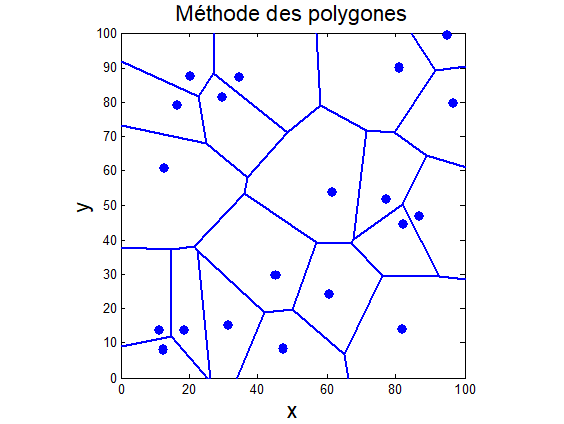
Les polygones sont obtenus par la méthode de Voronoi, un algorithme implémenté dans la grande majorité des logiciels. Pour chaque polygone d’influence, on calcule l’aire, puis on assigne à chaque échantillon un poids proportionnel à l’aire de son polygone par rapport à la somme totale des aires de tous les polygones, soit :
\[w_j = \frac{A_j}{\sum_{n=1}^{N} A_n}\]
où \(w_j\) est le poids associé à l’échantillon \(j\), \(A_j\) est l’aire de son polygone d’influence, et \(N\) est le nombre total d’échantillons. La Figure 4.9 présente 27 données de forage et les poids associés à ces forages, obtenus par la méthode des polygones d’influence. On constate que les poids sont les plus faibles au centre, où plus de données sont présentes, que sur les frontières, où les volumes sont plus importants.
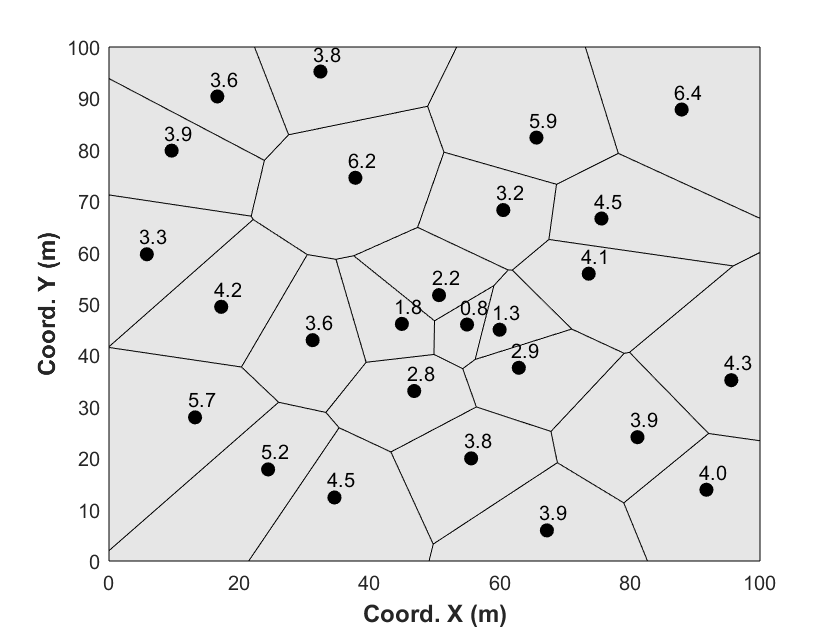
La méthode des polygones a toutefois une limite importante. Les échantillons en bordure peuvent recevoir un poids très différent selon la frontière choisie. Si la frontière est placée loin des données, un échantillon isolé peut finir par représenter une trop grande surface.
Le problème est que cette frontière n’est pas toujours facile à définir. Elle peut dépendre du modèle géologique, de la zone d’intérêt ou même des limites de la concession. Pour éviter de donner trop d’importance aux points périphériques, on peut fixer une frontière claire dès le départ ou limiter la portée d’influence de chaque échantillon.
Dégroupement par plus proche voisin
La technique de dégroupement par le voisin le plus proche est couramment utilisée pour l’estimation des ressources et est similaire à la méthode polygonale. La différence tient au fait qu’elle s’applique à une grille régulière de blocs ou de nœuds. À chaque bloc, le point le plus proche du jeu de données à dégrouper est attribué.
La Figure 4.10 présente les mêmes 27 données de forage que dans l’exemple précédent. Cette fois-ci, nous assignons directement à chaque bloc le point de forage (cercles noirs) le plus proche du centre du bloc (cercles rouges). Avec une densité de forages très régulière, la méthode de dégroupement par le voisin le plus proche est pratiquement équivalente à celle par polygones. L’avantage de cette approche réside dans le fait que les données sont directement associées au même support que celui utilisé pour les opérations minières et le calcul des ressources. Le poids d’un échantillon est alors la proportion de blocs qui lui sont attribués : \(w_i = m_i / M\), où \(m_i\) est le nombre de blocs dont il est le plus proche voisin et \(M\) le nombre total de blocs.
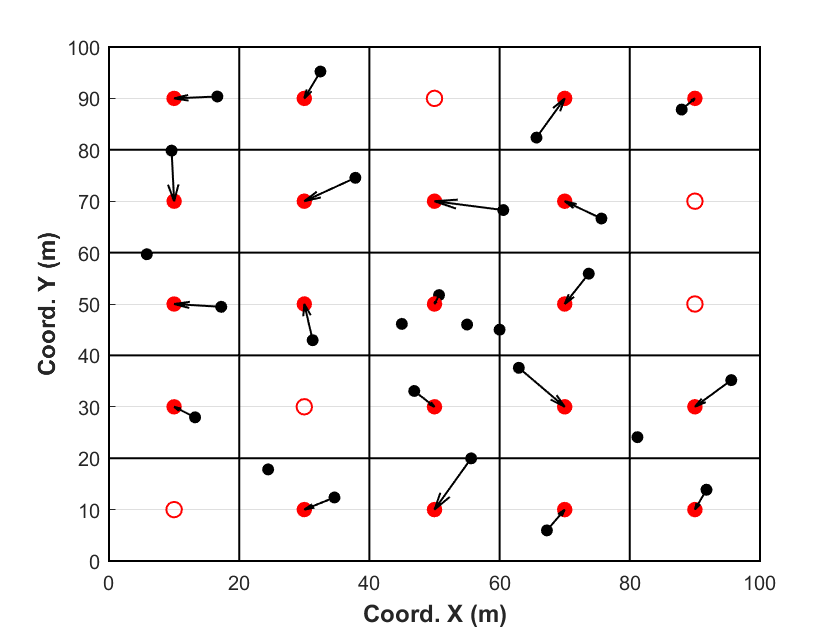
Dégroupement par cellules
La technique de dégroupement par cellules est une autre méthode couramment utilisée et sûrement l’une des plus populaires. Le processus consiste d’abord à diviser le volume d’intérêt en une grille de cellules, indexée par \(l = 1, \dots, L\). On procède ensuite au comptage des cellules occupées \(L_o\) et du nombre de données dans chaque cellule occupée \(n_{l_o}\). Enfin, un poids est attribué à chaque donnée en fonction du nombre de données présentes dans la même cellule. Pour une donnée \(i\) se trouvant dans la cellule \(l\), le poids est donné par :
\[w_i = \frac{1}{n_l \cdot L_o} \quad \text{si} \quad i \in l\]
Les poids sont supérieurs à zéro et leur somme est égale à 1. Chaque cellule occupée se voit attribuer le même poids. Une cellule non occupée ne subit aucun poids.
La Figure 4.11 présente les mêmes 27 données de forage. Nous comptabilisons le nombre de données présentes dans chaque cellule (délimitée par des encadrés noirs). Pour chaque cellule, un poids provisoire est attribué : si une seule donnée est présente, son poids est 1; s’il y en a deux, chacune reçoit 1/2. Plus généralement, pour \(n\) données, chaque point reçoit \(1/n\). Une fois ces poids provisoires calculés, ils sont normalisés par le nombre total de cellules occupées. On observe que certaines cellules ne contiennent aucune donnée, auquel cas aucun poids n’est attribué.
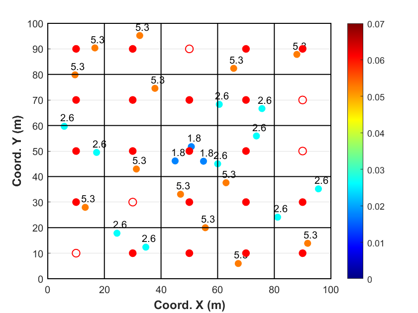
Les poids dépendent de la taille des cellules et de l’origine de la grille. Cette grille est un outil intermédiaire et ne correspond pas à la grille finale de modélisation. Si les cellules sont très petites, chaque donnée est isolée et toutes ont le même poids. À l’inverse, si elles sont trop grandes, toutes les données pourraient se regrouper dans une même cellule et recevoir un poids identique.
Le choix des paramètres nécessite des tests de sensibilité. On cherche souvent à ajuster la taille de la grille afin d’obtenir environ une donnée par cellule dans les zones faiblement échantillonnées. Il est essentiel de vérifier la sensibilité aux variations : si une petite variation modifie fortement le résultat, cela peut être dû à des valeurs extrêmes mal pondérées. En pratique, on ne règle pas les poids directement, mais la taille des cellules : on trace la moyenne dégroupée en fonction de cette taille (Figure 4.12) et l’on retient la taille qui minimise cette moyenne lorsque le suréchantillonnage cible les zones riches (ou qui la maximise lorsqu’il cible les zones pauvres). C’est la taille qui corrige le mieux le biais.
La dépendance à l’origine de la grille se traite de la même manière. À taille de cellule fixée, déplacer l’origine modifie les poids; pour éviter cet artéfact, on balaie plusieurs origines décalées et on moyenne les poids obtenus pour chaque décalage. Enfin, la forme des cellules doit s’adapter à l’anisotropie des données; si elles sont plus denses dans une direction, la taille des cellules dans cette direction doit être réduite.
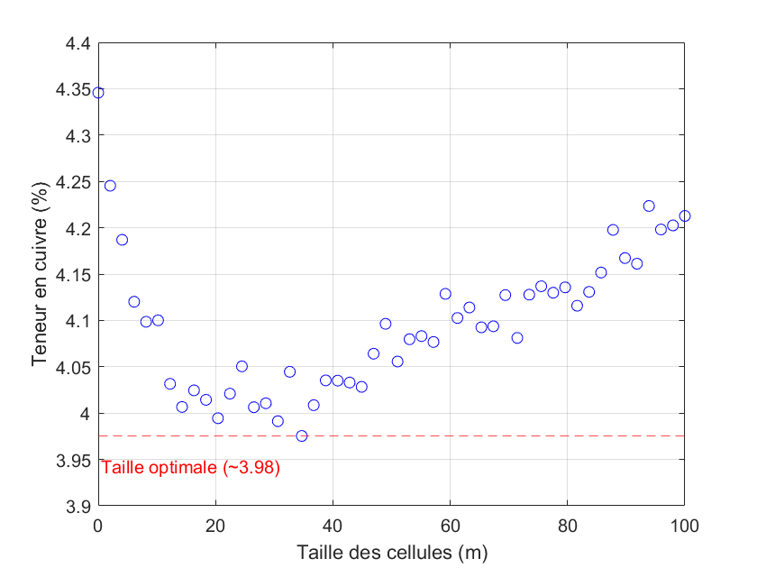